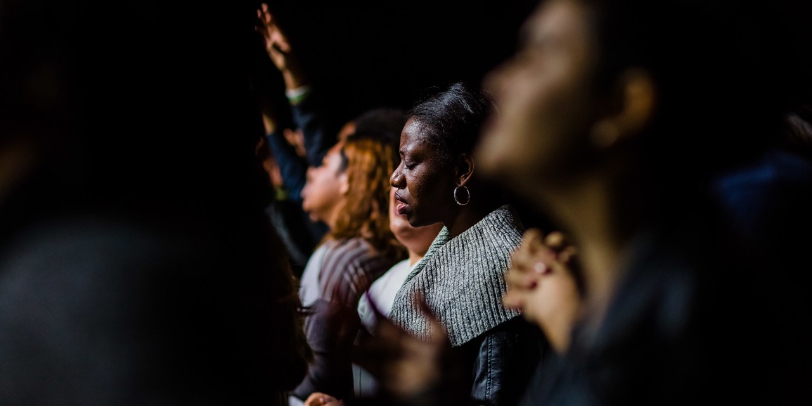
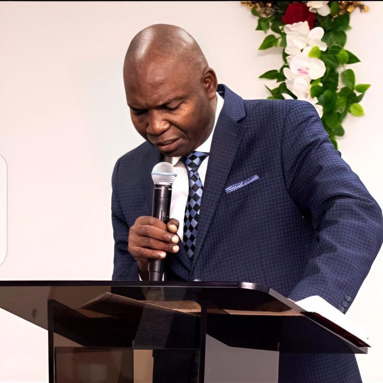
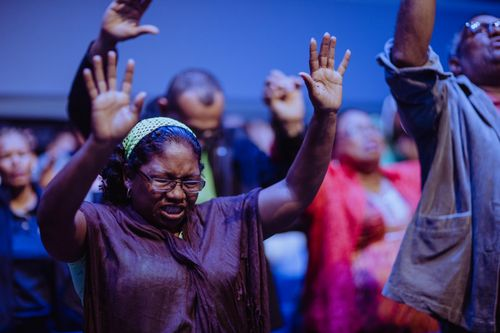
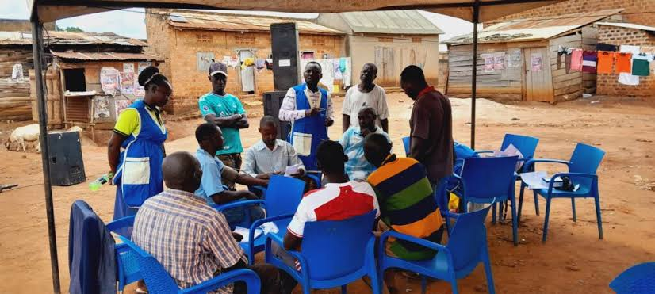
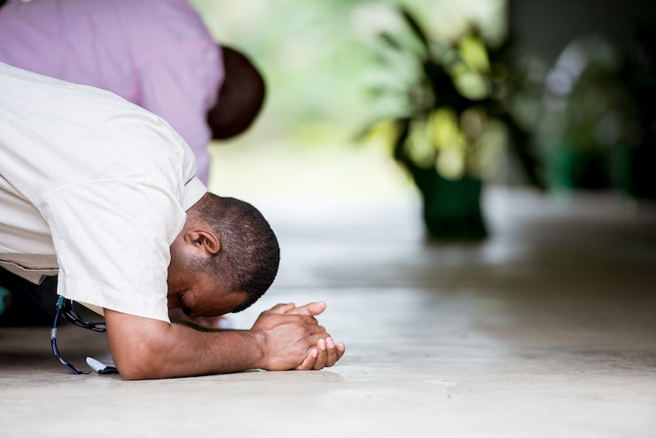
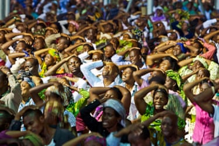
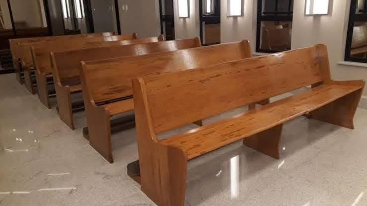
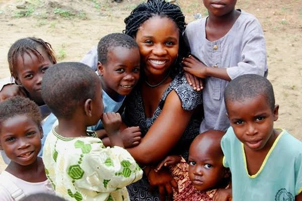

Christ’s Salvation Victory Mission International 41st Annual Convention
The welcome message and the convention theme, “Greater Glory.”
Read article ↗Founded in 1984
Christ Salvation Victory Mission International is a place of encounter with the Almighty God, committed to holiness, prayer, the Word and evangelism.
CSVM… Where God is doing it!
Welcome to CSVM
His saving grace and abundant power to deliver and set free from sin and its consequences are powerfully available. Here, we emphasise prevailing prayer and a deep study of God’s Word.

Eternal life through Christ alone.
Our mission ↗Freedom from every chain of bondage.
About CSVM ↗Trusting in God’s power through prayer and His Word.
Explore resources ↗A ministry committed to prayer, faith and the work of the Holy Spirit.
Connect with us ↗
Our leadership
Under the leadership of Pastor Emmanuel Oluwemimo Falodun, CSVM continues its commitment to the gospel, the nurture of Christian leaders and the planting of vibrant churches.
The ministry’s story began in 1984 with a mandate centred on personal evangelism, the Word of God and prayer.
Read our history ↗Faith in action
CSVM’s community work includes evangelism, a yearly programme of fasting and prayer, rural health outreach, donations of food and clothing, and support for a community electrification project.

The Annual All Believers Fasting and Prayer programme has been held since 1994.
Explore the work ↗
Documented outreach includes free health checks and medical services in rural communities in Ogun State.
Explore the work ↗
A place described by the church as a serene, sacred and solitary place to seek the Lord.
Explore the camp ↗From the church

CSVMGREATERThe welcome message and the convention theme, “Greater Glory.”
Read article ↗
OUR HERITAGEFoundedHow the ministry began and the leadership journey that followed.
Read article ↗
FAITH IN ACTIONServingA look at the church’s documented prayer, medical and welfare outreach.
Read article ↗Ministry network
You are welcome
Find a parish or learn more about the work of the ministry.